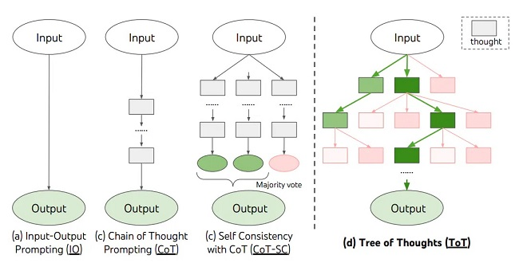

Basic Prompting [2] #
Zero-Shot Prompting [3] #
Few-Shot Prompting [3] #
CoT [2] #
Chain-of-Thought Prompting(CoT) [3] #
- Few-shot CoT
- Zero-shot COT
“Let’s think step by step”
Self-Consistency(CoT-SC) [3] #
The idea is to sample multiple, diverse reasoning paths through few-shot CoT, and use the generations to select the most consistent answer.
Tree of Thoughts (ToT) #
CoT vs. CoT-SC vs. ToT [3] #

Tips and Extensions [2] #
Self-Ask
Automatic Prompt Design [2] #
- Automatic Chain-of-Thought (Auto-CoT) [3]
Six strategies for getting better results[1] #
Write clear instructions #
清晰的指令
Provide reference text #
Split complex tasks into simpler subtasks #
复杂任务简单化
Give the model time to “think” #
给模型时间去思考
Use external tools #
使用外部工具
Test changes systematically #
优点vs 缺点 #
优点 #
简单 容易上手
缺点 #
- 上限有限
- 模型适配 prompt要适配每个模型
参考 #
- Prompt engineering openai
- Prompt Engineering paper
- Prompt Engineering Guide guide Prompt-Engineering-Guide *** git
1xx. 【社区第十三讲】 老刘说NLP线上交流 *** 很全
1xx. [论文阅读] Prompt Engineering综述
1xx. The Prompt Landscape langchain
1xx. CometLLM - suite of LLMOps tools - track and visualize LLM prompts and chains
1xx. 大模型 PUA 指南：来自 Google Meta Microsoft 等大厂
1xx. NLP（十三）：Prompt Engineering 面面观
1xx. prompt-engineering git
1xx. Chain-of-Thought Prompting 简读
1xx. ChatGPT应用端的Prompt解析：从概念、基本构成、常见任务、构造策略到开源工具与数据集
1xx. AutoPrompt Repo git
案例 #
- 运维大模型探索之 Text2PromQL 问答机器人 架构图， 最后两个重点总结 未